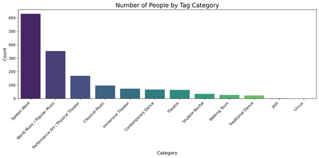
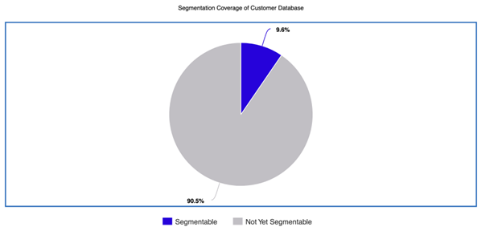
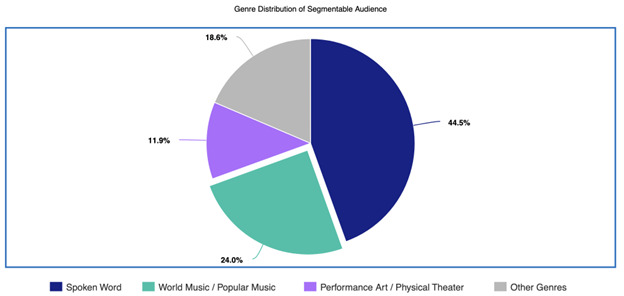

San Francisco International Arts Festival
Customer Segmentation, Data Analytics & Marketing Strategy Case Study
Python, CRM
Data Cleaning, normalization, segmentation
14,809 customer dataset
1300+ unique tags
1,415 targetable users
12 genre groups
SFIAF Customer Segmentation Report
This case study shows how I used and cleaned a disorganized CRM of over 14,800 customers, and turned it into segmentable list for marketing outreach for the San Francisco International Arts Festival. The dataset contained customer names, emails, and long histories of inconsistent customer preference tags, which had duplicates, multiple varions of the same feature, and was incomplete and unusable for targeted outreach. My role was to help increase conversions and overall effetiveness on mailing lists. During this report I identified and segemented audience groupings, and translated the results into marketing recommendations, and consulted for better data collection management practices that the company has now adopted.

SFIAF Customer Segmentation
This is a data analytics case study that focused on audience segmentation, customer tag cleanup, and creating groups for targeted marketing. This study explores applications used with python, a customer relationship management system (Nationbuilder), and a presentation to stakeholders showcasing the findings and translating them into actionable results.
Project Overview
Over the course of a decade, SFIAF has accumulated a large audience database of over 15,000 emails (14,800 unique customers). On this mailing list customers were given tags on purchases. If a customer a made a purchase for a show, they would be tagged in the sytem related to the name of the show. In this way customers could be tracked by preference or purchasing behavior. I identified this opportunity and presented the case to stakeholders saying this is was an opportunity to segments their customers and create segments from these lists to creat targeted emailing groups, increasing conversion potential on marketing outreach, but due to data consitency, onyl a small fraction could be used for preference-based marketing.
I was given a list of artists/show names (organized by genre), that needed to be used to group customers into. I analyzed their NationBuilder (CRM system) mailing list and began cleaning the data by combining duplicate emails that had different information, removing noise that weren't customers, and doing some exploratory data analysis to understand the dataset. From the list of relevant(current artists), out of the 14,800 unique users, only 1,415 users became the targetable audience subset for this analysis.
From there, I grouped those customers into 12 genre categories so the organization could have a targeted emailing list, and understand how much of their dataset was useful.
Objective
The goal was to determine how much of the audience was currently segmentable and which groups were most valuable for targeted outreach. More specifically, this project was designed to:
- Measure the current usable portion of the NationBuilder audience.
- Identify the strongest genre-based audience segments.
- Reveal structural gaps caused by inconsistent or missing tags.
- Provide clear recommendations for improving future targeting.
My role was to understand and translate the dateset into clear and actionable results, not just count tagged users and create a list, but to create a cleaned structure that could support real campaign strategy and future CRM improvements.
Data Source and Working Structure
The analysis was based on a NationBuilder customer export containing customer names, emails, and historical tag (artist/venue history) data. The most important working feature was the tag history, which included artist names, event references, and inconsistent label variants that had to be interpreted and standardized before they could support segmentation.
Core Working Inputs
- Name: Customer record identifier for review and cleanup.
- Email: Used to deduplicate records and represent unique customers.
- tag_list: Mixed historical labels connected to artists, events, or other CRM activity.
- Artist mappings: Client-specified artist references used to decide which tags were usable.
- Genre groupings: Broader categories used to transform artist-level tags into audience segments.
Final Analytical Output
- 14,809 total customers after duplicate emails were combined.
- 1,415 customers with at least one usable artist or genre tag.
- 65 unique usable tags tied to 22 artists or events.
- 12 genre categories built from those filtered and normalized tags.
Workflow
import pandas as pd
# Load NationBuilder export
df = pd.read_csv("nationbuilder_people_export.csv")
# Standardize and split the mixed tag field
df["tag_list"] = df["tag_list"].fillna("")
df["tags_split"] = df["tag_list"].str.split(", ")
# Flatten tags for review
all_tags = (
df["tags_split"]
.explode()
.dropna()
.str.strip()
)
# Filter tags connected to usable artists / events
usable_tags = all_tags[all_tags.isin(approved_artist_and_genre_tags)]
# Map artist-level tags into broader genre groups
df["genre_matches"] = df["tags_split"].apply(map_tags_to_genres)
# Keep only customers with at least one usable tag
segmentable = df[df["genre_matches"].str.len() > 0].copy()
Process
To make the dataset usable, I had to go beyond a simple tag count. The key challenge was that the NationBuilder export was not organized in a way that directly supported segmentation. Usable audience insight had to be built from inconsistent historical labels.
Step 1: Audit the available tag structure.# Count all unique tags for review
unique_tags = sorted(all_tags.unique())
len(unique_tags)Observations: The raw tag structure contained a mix of artist names, event labels, inconsistent naming patterns, and non-segmentation metadata. Before any audience analysis could happen, the usable portion had to be isolated from the noise.
Step 2: Filter the data into usable artist and genre tags.
# Keep only tags tied to approved artist or genre references
usable_customer_tags = df["tags_split"].apply(
lambda tags: [t for t in tags if t in approved_artist_and_genre_tags]
)Observations: This filtering step reduced the dataset to the portion that could support actual audience targeting. After cleaning, 65 unique usable tags remained across 22 events and artists.

# Example of raw tag variations referring to the same artist
[
"Green Room Theatre",
"Green Room",
"green room theatre",
"GreenRoom",
"Green Room SF"
]
Observations: A major challenge was that artist names were not stored consistently. The same artist could appear under multiple variations, including spacing differences, capitalization, abbreviations, or partial names. This fragmented audience data and prevented accurate grouping.
Step 4: Test automated matching methods (fuzzy similarity + clustering).
from rapidfuzz import process
# Example fuzzy matching attempt
process.extract("Green Room", unique_tags, limit=5)
Observations: In order to group the similar tags, I tested fuzzy similarity and ML clustering approaches to group similar tag names automatically. However, these methods produced unreliable groupings. Tags that shared common words such as “Green” or “Dance” were incorrectly grouped together, even when they referred to completely different artists or events.
Step 5: Manual validation and controlled mapping.
# Final approach: controlled mapping table
artist_map = {
"Green Room Theatre": "Green Room Theatre",
"Green Room": "Green Room Theatre",
"GreenRoom": "Green Room Theatre"
}
Observations: Because automated methods could not reliably distinguish between similar but unrelated tags, I created a controlled mapping system. This required manually reviewing tags in a table, searching for similar patterns, and assigning them to the correct artist or genre.
Why this matters: This step was critical to the accuracy of the segmentation. It demonstrates that real-world data often requires human judgment, and that relying purely on automated matching can introduce significant errors when labels are not uniquely structured.
Step 6: Group artist tags into broader audience categories.genre_map = {
"Spoken Word": spoken_word_tags,
"World Music / Popular Music": world_music_tags,
"Performance Art / Physical Theater": performance_art_tags,
...
}
df["genre_matches"] = df["tags_split"].apply(assign_genre_groups)Observations: This step turned fragmented CRM labels into a structure the organization could use. Instead of treating each artist tag as a separate silo, I grouped them into broader genres so SFIAF could identify concentrated audience behavior and plan cross-promotion more strategically.
Key Findings
Segmentation Coverage
Out of 14,809 total customers, only 1,415 had at least one usable tag. That means just 9.55% of the full audience could currently be targeted by artistic preference, while 90.45% could not yet be used for preference-based campaigns.
Why this matters: Even though the targetable portion is relatively small, it represents the most actionable part of the database. These are the people with known interest signals, making them the best group for targeted announcements, artist recommendations, and repeat-attendance campaigns.
Top Segment: Spoken Word
Spoken Word emerged as the strongest audience segment with 630 customers. That equals 45% of all tagged users and 4.25% of the total customer base, making it the largest identifiable audience in the current segmentation model.
Interpretation: This segment is the clearest starting point for targeted campaign strategy. Because it is both large and concentrated, it offers the strongest immediate opportunity for focused promotion, early announcements, and related programming recommendations.
Second Strongest Segment: World Music / Popular Music
World Music / Popular Music was the second most valuable segment with 353 customers, representing 25% of all tagged users. Because multiple artists fell into this category, it showed strong potential for cross-promotion across similar programming.
Interpretation: This segment is especially useful because it is not built around a single isolated artist. It creates a strong foundation for recommending related events to people who have already shown interest in similar music-based programming.
Audience Density Is Highly Concentrated
The top three genres — Spoken Word, World Music / Popular Music, and Performance Art / Physical Theater — accounted for 1,152 users, or 81% of all segmentable customers.
Interpretation: This concentration makes the prioritization decision much clearer. Rather than trying to build custom campaigns for every category, SFIAF can focus most segmentation effort on the largest groups and fold smaller genres into broader outreach.

Small Segments Do Not Support Standalone Campaigns
Several categories were too small to justify dedicated outreach. Walking Tours had 26 customers, Traditional Dance had 23, Jazz had 2, and Circus had 0. These categories still matter for programming, but they are not currently large enough to support independent campaign structures.
Interpretation: Smaller genres should be included inside broader campaigns instead of being treated as isolated marketing tracks. That approach makes better use of limited audience volume while still keeping those events visible.
Label System and Structural Gaps
One of the most important takeaways from this was that the main limitation was not audience interest. It was data structure. A total of 36 current (and historical) artists had no usable tags, which meant their audiences could not be identified or targeted at all. This prevented retention, cross-promotion, and behavior-based outreach for a large portion of the festival's programming.
These gaps reflected inconsistent historical data practices rather than necessarily weak audience demand. In other words, part of the marketing problem was actually a CRM architecture problem. The tag system had not been built in a way that preserved usable audience relationships over time.
# Example logic for identifying artists with no usable segmentation history
artists_without_tags = [
artist for artist in client_artist_list
if artist not in mapped_usable_artists
]
len(artists_without_tags)
# 36Why this matters: This finding shifts the conversation from “Who should we market to?” toward “How should the data be structured so we can keep learning who to market to?” It shows experience not just in analysis, but in identifying the system-level issue behind weak targeting.
Business Recommendations
1. Prioritize the largest existing segments. Spoken Word and World Music / Popular Music should be the immediate focus for targeted campaigns. These groups are already large enough to support meaningful segmentation and are the most likely to produce measurable results.
2. Use genre-based cross-promotion. Customers who attended one artist within a genre are statistically more likely to respond to similar artists in that same category. Instead of promoting each event in isolation, SFIAF can use existing affinity signals to expand discovery.
3. Standardize tagging for all future audience activity. Ticket buyers, RSVPs, and attendees should be automatically labeled by artist and genre. This prevents future data loss and steadily expands the usable audience base.
4. Backfill missing history where possible. Historical ticketing records, attendance lists, and artist mailing imports should be used to recover audience relationships that are currently missing from the CRM.
5. Treat CRM structure as part of marketing strategy. Better targeting does not come only from better messages. It also comes from better data architecture. Standardized tags create the conditions for smarter campaigns later.
It also shows that my process goes beyond surface-level reporting. Instead of only describing audience counts, I identified the structural reason targeting was limited and framed a path for improving the system over time. The result was not just a segmentation report, but a clearer model for how SFIAF can build stronger audience intelligence moving forward.